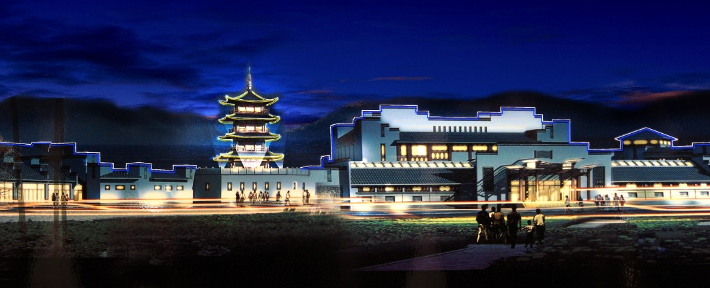

徽州村落


处在黄山与天目山脉之间的徽州，东临“吴越故都”杭州，与浙西的“金、衢、严”三州毗连，是中国儒文化传承的典型地域和中国文化史无法绕过的地方。“山限壤隔，民尚朴实”。这片峰峦叠嶂、河流密布的地方，处处是“人行明镜中，鸟度屏风里”的秀美山水，成为吸引北方士族迁徙至此的重要原因。
在这里，中原文化、吴越文化、楚文化交相融合，不仅形成了与藏文化、敦煌文化并称为“中国三大地域文化”的徽州文化，而且有四千多个保存完好的徽州村落，成为华夏大地上独一无二的人文、自然奇观。 而这方安居的寓所，以及境域的繁盛，徽商无疑是最大的创造者。如果没有徽商在明清时期的大兴土木，就不可能有今天如此存量的徽州建筑；如果没有徽商文化的内外融合、交流、碰撞，就不可能有徽州文化的如此丰富与多彩。
那遍布村落的徽派建筑，既是无数创造者非凡智慧和家园梦想的直接表达，亦是徽文化母体背景的一种依托与标志。在徽州人魂牵梦绕的乡村居所里，处处能够感受到徽州文化的一脉相承与生生不息。